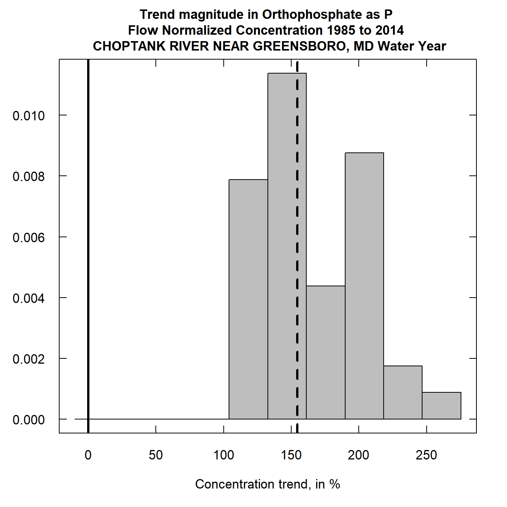
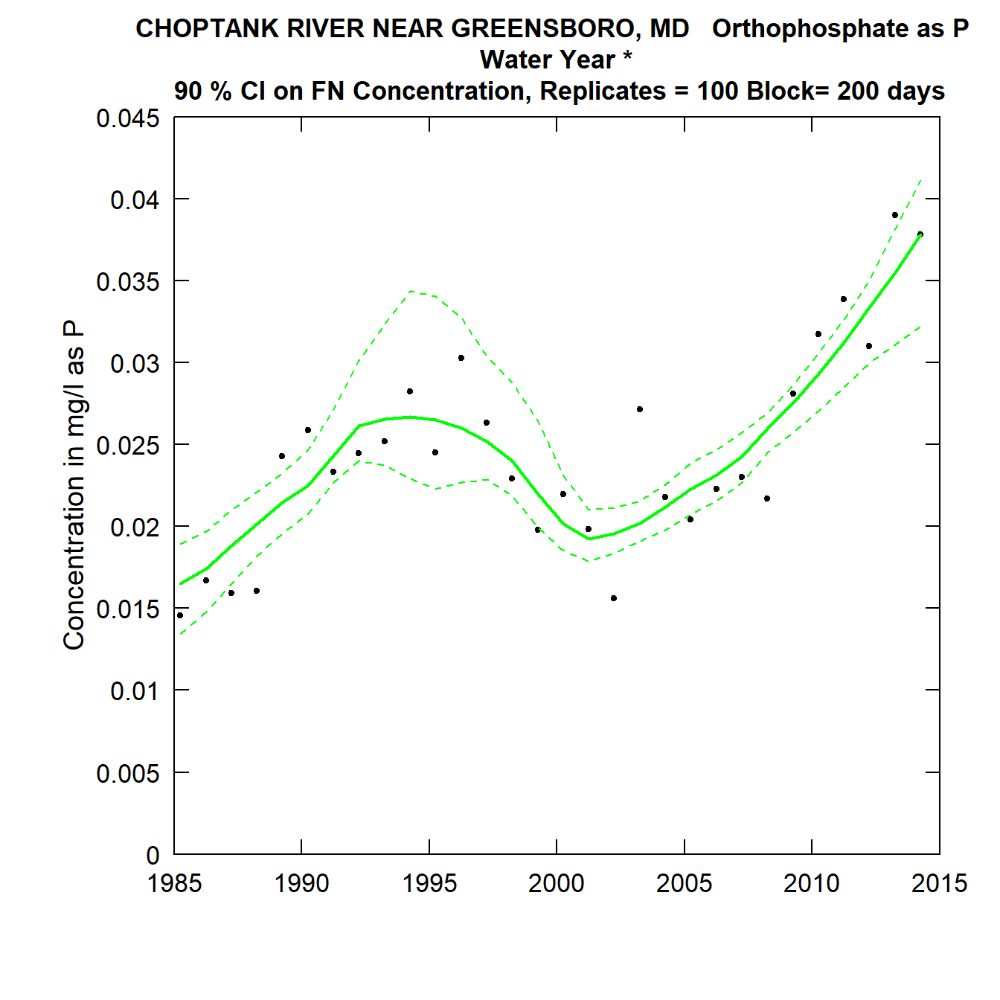
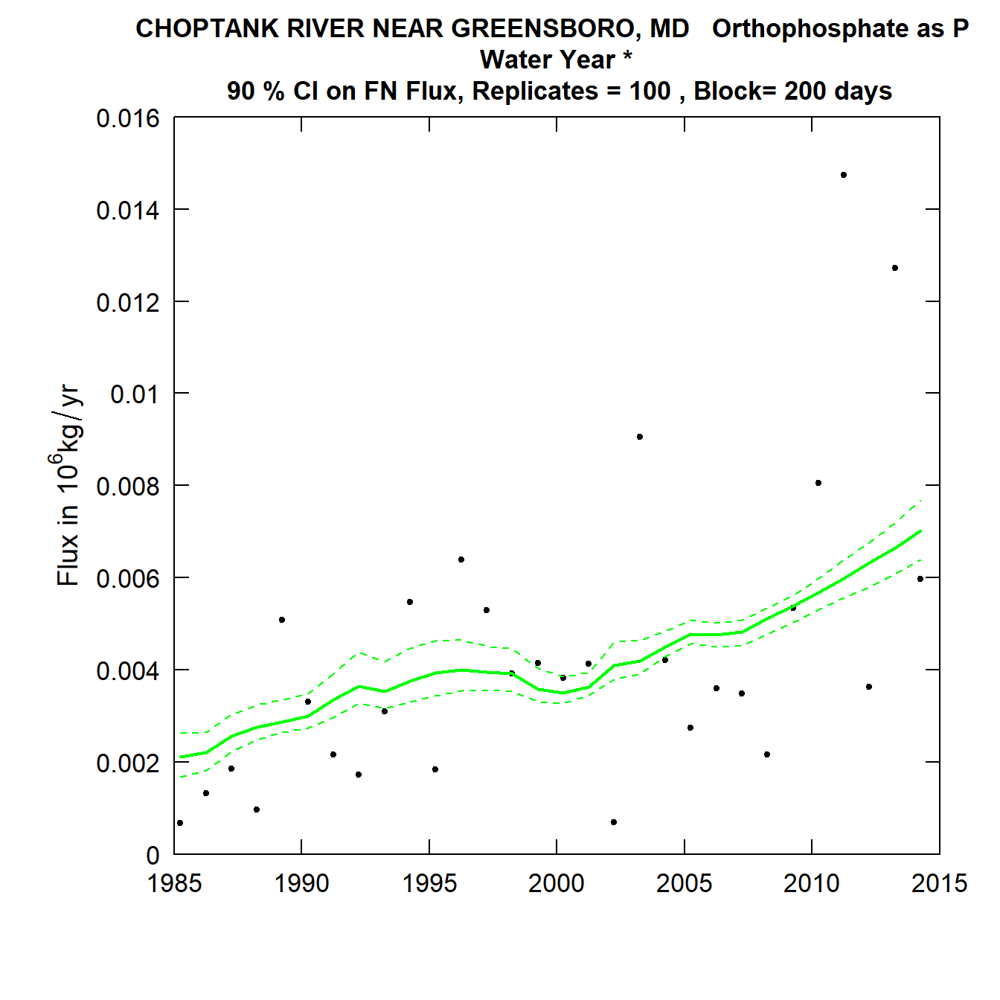
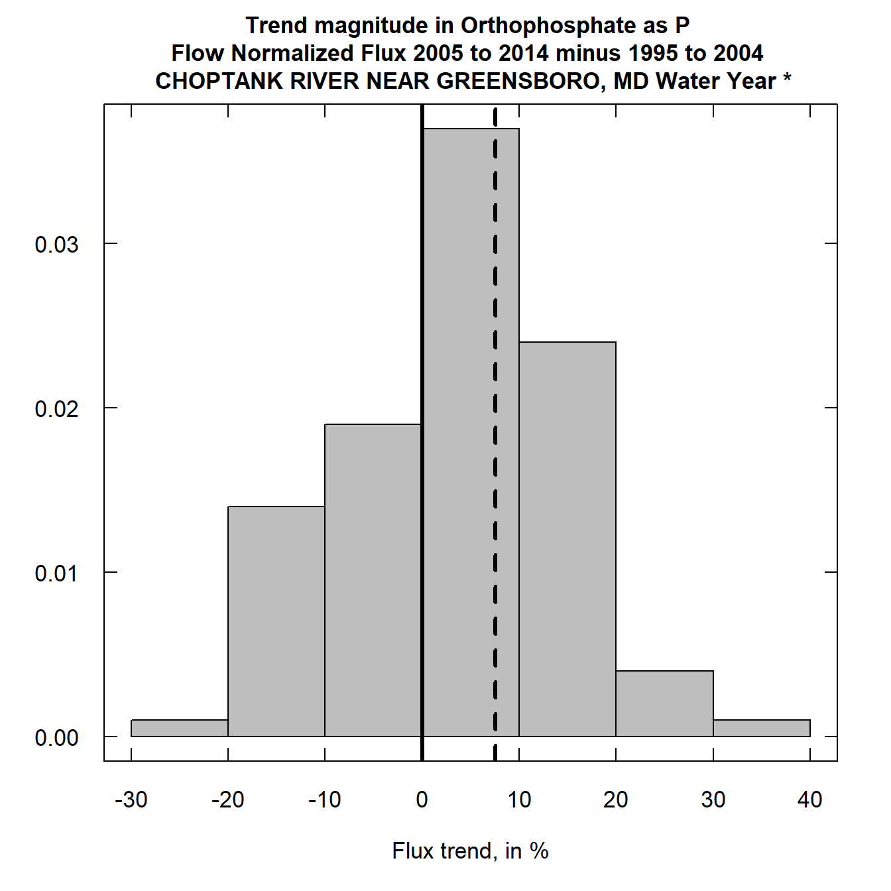
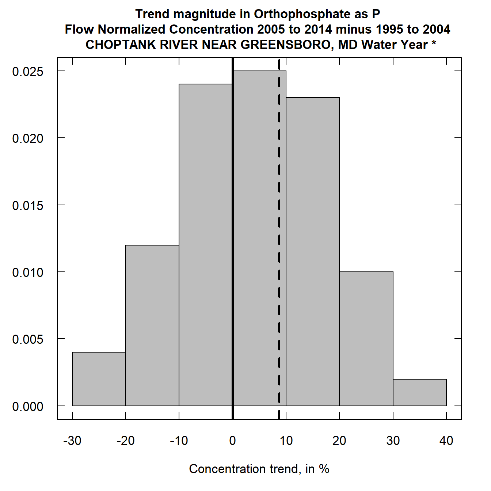

Guide to EGRETci 2.0 enhancements
Robert M. Hirsch and Laura De Cicco
2018-06-18
Source:vignettes/Enhancements.Rmd
Enhancements.RmdIntroduction
This vignette documents a set of enhancements of the EGRETci software package. EGRET is “Exploration and Graphics for RivEr Trend” which has been developed my Robert M. Hirsch and Laura DeCicco of the U.S. Geological Survey. The EGRETci package contains functions that can be used to evaluate the uncertainty associated with results generated by the EGRET code. This document, on the EGRETci 2.0 enhancements assumes that the reader already has a good understanding of WRTDS (Weighted Regressions on Time Discharge and Season), and the EGRET 2.0 package and the EGRET 3.0 enhancements (“Guide to EGRET 3.0 enhancements”) as well as the documentation “Introduction to EGRET Confidence Intervals”"). The two releases EGRET 3.0 and EGRETci 2.0 are tightly linked in terms of naming conventions and the sharing of various objects between them. Brief reference is made to these EGRETci functions in the documentation of the EGRET 3.0 enhancements.
The releases of EGRET 3.0 add some new flexibility to the WRTDS method. The flexibility that the new version provides are of two kinds. One is an ability to partition the sample data into two periods, one before and one after, a change that happened in the watershed that we believe to have had an important, sudden, but lasting impact on water quality. The other is the ability to relax the assumption of stationarity of streamflow in the flow normalization process. As shorthand we refer to the first of these enhancements as the “wall”, and the second as “Generalized Flow Normalization.” These are discussed in detail in “Guide to EGRET 3.0 enhancements” and are not repeated here.
EGRETci 2.0 is designed so that it will produce exactly the same outputs as EGRETci 1.0 version did using the same set of commands that would have been used there.
This document discusses the motivations and general concepts behind these enhancements, and then move to instructions for implementation. It is assumed that the reader already has a good working knowledge of WRTDS, EGRET and EGRETci. Hirsch, Moyer and Archfield, 2010 (https://onlinelibrary.wiley.com/doi/abs/10.1111/j.1752-1688.2010.00482.x), Hirsch and DeCicco, 2015 (https://pubs.usgs.gov/tm/04/a10/), Hirsch, Archfield and DeCicco, 2015 (https://www.sciencedirect.com/science/article/pii/S1364815215300220?via%3Dihub) and the “Introduction to the EGRET package” included with the EGRET package and the “Introduction to EGRET Confidence Intervals” included with the EGRETci package.
Problem set up
There are three distinct types of problem set-ups that are possible in the new formulation and each of them has its own distinct workflow and outputs. They are known as Pairs, Series, and Groups. What do these terms mean here? Pairs is for the comparison of any two years in the study period, Series is to describe the entire study period to produce graphs of the change as a function of time, Groups is for the comparison of any two groups of contiguous years. The appropriate use of each of these three set-ups is described in detail in the “Guide to EGRET 3.0 enhancements.”
runPairsBoot: The bootstrap uncertainty analysis for runPairs results
The function that does the uncertainty analysis for determining the change between any pair of years is called runPairsBoot. It is very similar to the wBT function that runs the WRTDS Bootstrap Test in EGRETci 1.0. It differs from wBT in that it runs a specific number of bootstrap replicates, unlike the wBT approach that will stop running replicates based on the status of the test statistics along the way.
The call to runPairsBoot is very simple, because it gets virtually all of the information about how the analysis is to be set up from information in the attributes of pairResults. The only arguments that are required are the eList and pairResults and three more arguments specifically related to the bootstrap process. These are described here:
nBoot This is the number of bootstrap replicates to run. It has a default value of 100. A value of 100 should give rough approximation of the correct likelihood of the trend direction. For example, if the bootstrap results were upwards trends in 98 of 100 replicates, then we could say that we have about 95% confidence that the true likelihood that the trend is upwards is between 0.945 and 0.998 (rather strong evidence of an upwards trend). For purposes of a published study going to nBoot = 500 may be appropriate. For example if we had 490 upwards trends out of 500 replicates we could say with 95% confidence that the likelihood that the true trend is upwards is between 0.966 and 0.991. To see if it is even worthwhile to do a large number of replicates one could use a very small number of replicates, say nBoot = 10 and if there is a fairly even mix of increases and decreases we can dispense with the high number of replicates and simply conclude that it is about as likely up as it is down. In a few cases some of the bootstrap replicates have results that do not converge and they generate an error message but no results for that replicate. To deal with that, the function is designed to run more replicates than nBoot but to quit when it reaches nBoot
startSeed This is the seed for the random number generator, which is used to create the random bootstrap replicates of the data. It has a default value but any integer will work. Knowing the startSeed value is vital to reproducing the results. If a different value of startSeed is used in a later run it will produce slightly different results, but with nBoot of 200 or more these differences should be trivially small.
blockLength This is the block length for the block bootstrap resampling (see https://doi.org/10.1016/j.envsoft.2015.07.017 for an explanation). This argument has a default of 200 so it shouldn’t need to be specified.
Here we will run a trivially small example of runPairsBoot based on the problem set up in the second example of runPairs in the EGRET 3.0 enhancements User Guide.
##
## iBoot, xConc and xFlux 1 0.02945991 0.008551847
## iBoot, xConc and xFlux 2 0.03206329 0.00679873
## iBoot, xConc and xFlux 3 0.03999008 0.009244759
## iBoot, xConc and xFlux 4 0.02996934 0.007825879
## iBoot, xConc and xFlux 5 0.02524305 0.006909203
## iBoot, xConc and xFlux 6 0.02446039 0.008156726
## iBoot, xConc and xFlux 7 0.0260888 0.006907453
## iBoot, xConc and xFlux 8 0.03476892 0.009267319
## iBoot, xConc and xFlux 9 0.0312366 0.007241716
## iBoot, xConc and xFlux 10 0.03206072 0.007459438
## CHOPTANK RIVER NEAR GREENSBORO, MD
## Orthophosphate as P
## Season Consisting of Apr May Jun Jul Aug
##
##
## Change estimates are for 2014 minus 1985
## Sample data set was partitioned with a wall at 1995-05-31
##
##
##
## Should we reject Ho that Flow Normalized Concentration Trend = 0 ? Reject Ho
## best estimate of change in concentration is 0.0313 mg/L
## Lower and Upper 90% CIs 0.0245 0.0400
## also 95% CIs 0.0245 0.0400
## and 50% CIs 0.0259 0.0327
## approximate two-sided p-value for Conc 0.18
## * Note p-value should be considered to be < stated value
## Likelihood that Flow Normalized Concentration is trending up = 0.955 is trending down = 0.0455
##
## Should we reject Ho that Flow Normalized Flux Trend = 0 ? Reject Ho
## best estimate of change in flux is 0.00769 10^6 kg/year
## Lower and Upper 90% CIs 0.00680 0.00927
## also 95% CIs 0.00680 0.00927
## and 50% CIs 0.00691 0.00873
## approximate two-sided p-value for Flux 0.18
## * Note p-value should be considered to be < stated value
## Likelihood that Flow Normalized Flux is trending up = 0.955 is trending down = 0.0455
##
## Upward trend in concentration is highly likely
## Upward trend in flux is highly likely
## Downward trend in concentration is highly unlikely
## Downward trend in flux is highly unlikelyThe output is pretty self-explanatory and the latter part of it is identical to the summary information provided by wBT.
The object returned by runPairsBoot is virtually the same as the eBoot object returned by wBT. It contains the data frame called bootOut which contains all the results of the test that are shown in the console. One new feature here is bootOut$nBootGood. Because there is a small chance that the bootstrap results will contain a small number of iterations that fail to complete it may end up with a number of valid replicates that is less than nBoot. The number of usable replicates is nBootGood. The other parts of the returned object are the same as those returned from wBT.
One of the outputs we can use to describe the results of the test is the histogram of percentage changes. These can be done with the plotHistogramTrend function just as they have been in the EGRETci 1.0.3 software. The only difference in the call to the function is that we don’t use caseSetUp in runPairs so that argument is set to caseSetUp = NA.
To call this function for a runPairsBoot result would look like this:
plotHistogramTrend(eList, eBoot, caseSetUp = NA,
flux = TRUE, xMin = NA, xMax = NA,
xStep = NA, printTitle = TRUE,
cex.main = 1.1, cex.axis = 1.1,
cex.lab = 1.1, col.fill = "grey", ...)The only two arguments required are eList, and eBoot which represents the output from runPairsBoot.
Here are the calls to plotHistogramTrend first for flux, and then for concentration. [We have substituted in a set of runPairsBoot outputs for which nBoot = 100 rather than using the one shown above.]


So, what the results clearly show us is that flux has clearly increased and probably by a magnitude of a few hundred percent and concentration has clearly increased probably by an amount between about 100 % to 200 %.
The bootstrap uncertainty analysis for runSeries
The purpose of Series analysis is to create a time series of flow-normalized concentrations and flow-normalized flux values. The function that does this is runSeries in the EGRET package.
In the case of runSeries we can do uncertainty analysis which provides us with confidence intervals around the flow normalized time series that we estimated from running the runSeries function. In this case we actually use the same functions that were used in EGRETci 1.0.3, but they have been modified here to accommodate all of the flexible features of runSeries (but they run exactly as they did before if they were just working off of results from modelEstimation).
This is how it is called:
The eList that is passed to the function should be a version of eList that has already been run through runSeries. So, for the example run shown above the eList argument would be eListOut. That version contains all the estimated values as well as all of the arguments that were used in the computation (related to the wall and flowBreak etc.). There is no need to specify startSeed, the default will be fine (unless one wants to explore how the results might change in another run of the function). To avoid seeing all the progress indicators on the screen one can set verbose = FALSE, but it may be desirable just to see that the job is continuing to run by setting verbose = TRUE. It can take a considerable amount of computer time.
The ... in the call specifically relate to some other bootstrap-related parameters that the user might wish to set. They can be left out of the call, and the program with interactively request the information, or they can be set directly in the call. We will set up to run the job specifying them without the interactive part (as would be done in a batch implementation).
We will run the bootstrap analysis here. We will use the output of the last run of runSeries above.
CIAnnualResults <- ciCalculations(eListOut, verbose = FALSE,
nBoot = 100, blockLength = 200,
widthCI = 90)nBoot is the number of bootstrap replicates to be run. A result that is suitable for publication should probably have nBoot at least 100 and preferably 200. blockLength is typically set to 200. widthCI is the width of the confidence interval. If widthCI = 90 that means that the confidence intervals that will be drawn are the 5th and 95th percentiles.
We can visualize the results by using the plotConcHistBoot and plotFluxHistBoot functions (which were a part of the EGRETci 1.0.3 code). Running them with results from runSeries requires that we use the eList that is produced by the runSeries function. So, following the results we saw from runSeries we would obtain the confidence interval plots as follows. (Note that there are several other arguments to these functions that are the same as those used in plotConcHist and plotFluxHist).


runGroupsBoot: The bootstrap uncertainty analysis for runGroups results
The function that does the uncertainty analysis for determining the change between two groups of years is called runGroupsBoot. The process is virtually identical to what is used for runPairsBoot, so much of the detail will be left out of this discussion. The call to runGroupsBoot is very simple, because it gets virtually all of the information about how the analysis is to be set up from information in the attributes of groupResults. The only arguments that are required are the eList and groupResults and three more arguments specifically related to the bootstrap process:
nBoot This is the number of bootstrap replicates to run. It has a default value of 100. In a few cases some of the bootstrap replicates have results that do not converge and they generate an error message but no results for that replicate. To deal with that the function is designed to run more replicates than nBoot but to quit when it reaches nBoot
startSeed This is the seed for the random number generator, which is used to create the random bootstrap resamples of the data. It has a default value but any integer will work.
blockLength This is the block length for the block bootstrap resampling. This argument has a default of 200 so it shouldn’t need to be specified.
Here we will run runGroupsBoot based on the problem set-up in the example of runGroups in the EGRET 3.0 Enhancements User Guide.
iBoot, xConc and xFlux 1 0.00296113 0.0003499154
iBoot, xConc and xFlux 2 -0.0002956797 -0.0003143112
iBoot, xConc and xFlux 3 0.0001199606 0.0001024746
iBoot, xConc and xFlux 4 0.004232349 0.0005949532
iBoot, xConc and xFlux 5 -0.0008650439 4.191467e-05
iBoot, xConc and xFlux 6 -0.001280164 0.0001122891
iBoot, xConc and xFlux 7 -0.002730855 -0.0005173218
iBoot, xConc and xFlux 8 0.0005945323 3.359549e-05
iBoot, xConc and xFlux 9 -0.00185535 -0.0002769316
iBoot, xConc and xFlux 10 0.00237835 -5.252596e-05
iBoot, xConc and xFlux 11 -0.0007078044 0.0003114707
iBoot, xConc and xFlux 12 0.001508941 0.0001066674
iBoot, xConc and xFlux 13 0.004071296 0.0005335327
iBoot, xConc and xFlux 14 -0.0001735777 -0.0005556122
iBoot, xConc and xFlux 15 0.00599777 0.000614942
iBoot, xConc and xFlux 16 0.001538242 0.0002337665
iBoot, xConc and xFlux 17 0.006749636 0.0007939581
iBoot, xConc and xFlux 18 0.005815952 0.0007315923
iBoot, xConc and xFlux 19 0.003426709 0.0007374633
iBoot, xConc and xFlux 20 -0.001774188 -0.0003256709
iBoot, xConc and xFlux 21 -0.002079089 0.0004484381
iBoot, xConc and xFlux 22 -0.0007066837 -0.0001807576
iBoot, xConc and xFlux 23 -0.005430486 -0.0007201224
iBoot, xConc and xFlux 24 0.000223922 0.0001479919
iBoot, xConc and xFlux 25 0.005366904 0.0007532143
iBoot, xConc and xFlux 26 0.008773515 0.001460164
iBoot, xConc and xFlux 27 0.003369205 0.0003861387
iBoot, xConc and xFlux 28 -0.0001132602 0.0001867561
iBoot, xConc and xFlux 29 0.0006686016 4.493021e-05
iBoot, xConc and xFlux 30 -0.001548789 -0.0005782319
iBoot, xConc and xFlux 31 -0.003271376 -0.0002991132
iBoot, xConc and xFlux 32 0.003254532 0.0005080041
iBoot, xConc and xFlux 33 -0.002473899 -0.0006956646
iBoot, xConc and xFlux 34 0.002954511 0.0004589053
iBoot, xConc and xFlux 35 0.001859739 0.0005232247
iBoot, xConc and xFlux 36 0.000205754 -0.0002925691
iBoot, xConc and xFlux 37 0.006250899 0.001055866
iBoot, xConc and xFlux 38 -0.0006535967 -0.0004822819
iBoot, xConc and xFlux 39 0.0006988749 -2.064548e-05
iBoot, xConc and xFlux 40 0.003918804 0.000786653
iBoot, xConc and xFlux 41 -0.004701281 -0.0005051942
iBoot, xConc and xFlux 42 0.004054271 0.0008490754
iBoot, xConc and xFlux 43 -0.006320721 -0.001543896
iBoot, xConc and xFlux 44 0.001859387 0.0004101864
iBoot, xConc and xFlux 45 -0.0009117444 -0.000255238
iBoot, xConc and xFlux 46 0.0008818197 0.0003139016
iBoot, xConc and xFlux 47 0.005216368 0.0007289817
iBoot, xConc and xFlux 48 0.004077073 0.0003021199
iBoot, xConc and xFlux 49 0.003401253 0.0003820816
iBoot, xConc and xFlux 50 0.0005679719 -1.639405e-05
iBoot, xConc and xFlux 51 -0.0009884518 0.0004520003
iBoot, xConc and xFlux 52 -0.004420304 -0.0003096841
iBoot, xConc and xFlux 53 0.002586903 0.001034837
iBoot, xConc and xFlux 54 0.004206091 0.0003783913
iBoot, xConc and xFlux 55 -0.009143585 -0.001147733
iBoot, xConc and xFlux 56 0.0005986389 -4.747323e-06
iBoot, xConc and xFlux 57 0.002109233 0.0007813532
iBoot, xConc and xFlux 58 0.00414972 0.0004610786
iBoot, xConc and xFlux 59 0.002993041 0.0003091531
iBoot, xConc and xFlux 60 0.002846247 0.0006659026
iBoot, xConc and xFlux 61 0.002668368 0.000449732
iBoot, xConc and xFlux 62 -0.001742667 -0.0005525405
iBoot, xConc and xFlux 63 -0.002404266 -0.0001700295
iBoot, xConc and xFlux 64 -0.0008766811 1.589613e-05
iBoot, xConc and xFlux 65 0.0004430443 0.000302904
iBoot, xConc and xFlux 66 0.006818324 0.001059532
iBoot, xConc and xFlux 67 0.0006334154 0.0002179236
iBoot, xConc and xFlux 68 -0.002110705 -0.0002216237
iBoot, xConc and xFlux 69 0.006488668 0.0006934581
iBoot, xConc and xFlux 70 -0.003196369 -0.0007519133
iBoot, xConc and xFlux 71 0.002657402 0.0002592652
iBoot, xConc and xFlux 72 -0.001853064 -7.620064e-05
iBoot, xConc and xFlux 73 0.00085342 0.0004325767
iBoot, xConc and xFlux 74 0.006531278 0.0009578679
iBoot, xConc and xFlux 75 0.008537614 0.0008598648
iBoot, xConc and xFlux 76 0.002297062 2.555942e-05
iBoot, xConc and xFlux 77 -0.002687176 0.0002488402
iBoot, xConc and xFlux 78 0.003694669 0.00068228
iBoot, xConc and xFlux 79 0.004350885 0.0007601271
iBoot, xConc and xFlux 80 0.001781713 -0.0001474699
iBoot, xConc and xFlux 81 0.0008217254 0.0005422078
iBoot, xConc and xFlux 82 -0.001323234 0.0004066879
iBoot, xConc and xFlux 83 0.005265871 0.0003251419
iBoot, xConc and xFlux 84 0.001481824 0.0006118648
iBoot, xConc and xFlux 85 0.001815007 0.0001646148
iBoot, xConc and xFlux 86 -0.006386326 -0.0005447886
iBoot, xConc and xFlux 87 0.001665425 7.357665e-05
iBoot, xConc and xFlux 88 -0.002839328 -0.0003985006
iBoot, xConc and xFlux 89 0.002342255 0.0004648416
iBoot, xConc and xFlux 90 -0.0003995236 0.0002937856
iBoot, xConc and xFlux 91 -0.002952168 -0.0005628717
iBoot, xConc and xFlux 92 0.001756899 0.0002947953
iBoot, xConc and xFlux 93 0.004775163 0.0005555863
iBoot, xConc and xFlux 94 0.003524297 0.0005459668
iBoot, xConc and xFlux 95 -0.002492192 -4.470779e-05
iBoot, xConc and xFlux 96 -0.006018777 -0.0009101245
iBoot, xConc and xFlux 97 -0.003374182 -0.0004205534
iBoot, xConc and xFlux 98 0.001089447 0.0006524845
iBoot, xConc and xFlux 99 0.003994856 0.000587242
iBoot, xConc and xFlux 100 -0.002853742 -0.0001963295
CHOPTANK RIVER NEAR GREENSBORO, MD
Orthophosphate as P
Season Consisting of Apr May
Change estimates for
average of 2005 through 2014 minus average of 1995 through 2004
Sample data set was partitioned with a wall at 2004-10-30
Should we reject Ho that Flow Normalized Concentration Trend = 0 ? Do Not Reject Ho
best estimate of change in concentration is 0.0022 mg/L
Lower and Upper 90% CIs -0.005394 0.006529
also 95% CIs -0.006352 0.007635
and 50% CIs -0.001492 0.003420
approximate two-sided p-value for Conc 0.76
Likelihood that Flow Normalized Concentration is trending up = 0.619 is trending down = 0.381
Should we reject Ho that Flow Normalized Flux Trend = 0 ? Do Not Reject Ho
best estimate of change in flux is 0.000372 10^6 kg/year
Lower and Upper 90% CIs -0.000719 0.000953
also 95% CIs -0.001023 0.001058
and 50% CIs -0.000192 0.000545
approximate two-sided p-value for Flux 0.68
Likelihood that Flow Normalized Flux is trending up = 0.658 is trending down = 0.342
Upward trend in concentration is about as likely as not
Upward trend in flux is about as likely as not
Downward trend in concentration is about as likely as not
Downward trend in flux is about as likely as not
The output is pretty self-explanatory and virtually the same as that which is generated by runPairsBoot.
The object returned by runGroupsBoot is virtually the same as the eBoot object returned by wBT. The object returned, called bootGroupsOut contains all the results of the test that are shown in the console.
We cam visualize the results of the test as a the histogram of percentage changes. These can be done with the plotHistogramTrend function.
To call this function for a runGroupsBoot result would look like this:
plotHistogramTrend(eList, eBoot, flux = TRUE,
xMin = NA, xMax = NA, xStep = NA,
printTitle = TRUE, cex.main = 1.1,
cex.axis = 1.1, cex.lab = 1.1,
col.fill = "grey", ...)The only two arguments required are eList, and eBoot which represents the output from runGroupsBoot.
Here are the calls to plotHistogramTrend first for flux, and then for concentration. The xMin, xMax, and xStep arguments shown below were selected based on first viewing the results using the default values and then searching for a set of values for the three arguments that provided a good representation of the distribution.


What the results clearly show us is that both flux and concentration indicate that it is somewhat more likely to have been an increase rather than a decrease between the two groups of years. Our best estimate is an increase is a little less than about + 10%. For both flux and concentration the trend is fairly likely to be in the range from -20 % to about +30%.